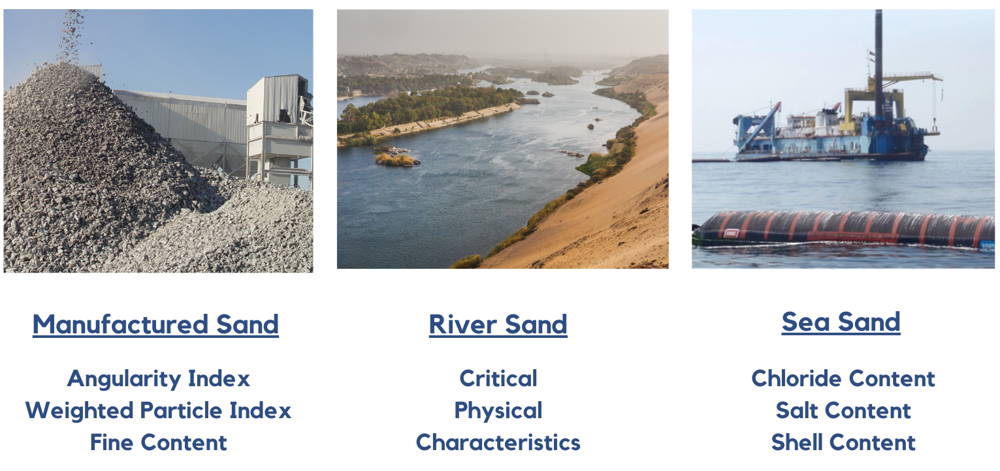
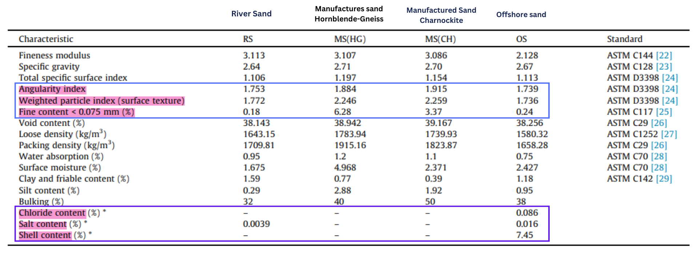
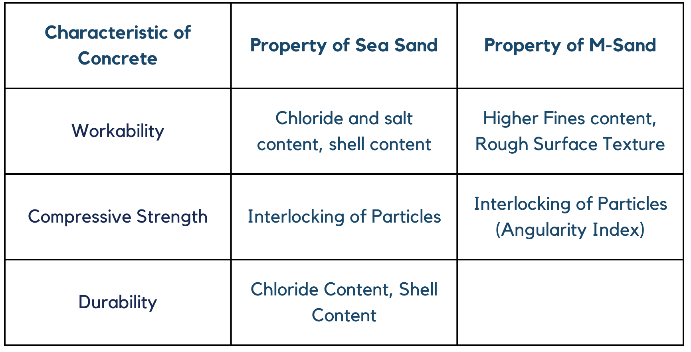
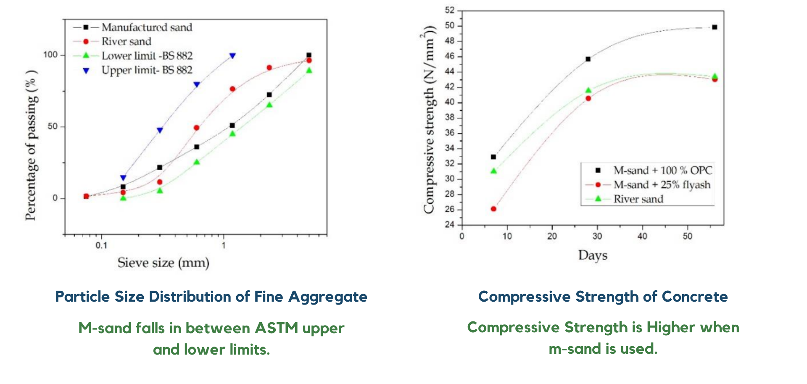
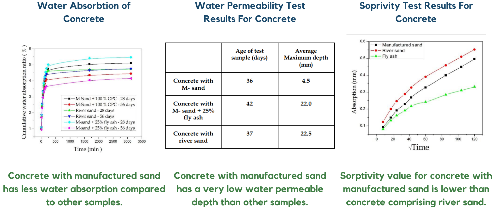

Literature Review
M-Sand and sea sand exhibit distinct physical properties that set them apart from traditional river sand [8]
Physical and Mechanical Characteristics of Selected Sand Types
 Arulmoly, B., Konthesingha, C. and Nanayakkara, A., 2021. Performance evaluation of cement mortar produced with manufactured sand and offshore sand as alternatives for river sand. Construction and Building Materials, 297, p.123784.
The distinctive properties of M-Sand and sea sand have a direct impact on the characteristics of concrete. The following table illustrates the key properties of both types of sand, delineating their specific influence on various aspects of concrete performance.
Nevertheless, it's crucial to note that these properties are contingent on various factors. In the case of sea sand, variables such as geographical location and the washing method employed introduce variability. Similarly, for M-Sand, the type of rock used significantly influences its properties. Consequently, the divergent outcomes observed in different studies underscore the importance of contextual specificity. To ensure a more focused and reliable investigation, we narrowed the scope of our study to the Sri Lankan context. By doing so, we aim to account for the unique regional characteristics that may influence the properties of sea sand and M-Sand in this specific setting. This approach allows us to derive insights that are more pertinent and applicable to the local construction practices and material conditions prevalent in Sri Lanka. We will try to built a narrative through the following timeline, so that we have a rationale to proceed.
Timeline of Literature Published on M-sand and Sea sand in Sri Lankan Context

First, let us look at how properties are affected by the location in Sri Lanka.
Alternatives for river sand [1]
In this paper, they take offshore sand from four distinct places: Muthurajawela, Ratmalana, Wadduwa, and Negombo, and discuss their properties. Tests are conducted on, 1. Shell content -(shells greater than 5mm) 2. Salt contamination 3. Compressive strength of concreteResults
Shell Content
Shells less than 5 mm were found to be in the range of 0.6% to 5.3% for offshore sand samples.The shell content of the fraction less than 5 mm was found to be in the range of 6.5% to 39.0%.
Chloride Content

The Chloride content of Muthurajawela is less, but this is because the stockpiles were exposed to rain.
Compressive Strength

The compressive strength results show that the concrete made with all three alternatives is as good as the strength of concrete made with river sand.
Next, let us look at how washing can affect the properties of sea sand.
Lanka, M.S., EVALUATION OF THE POTENTIAL OF SEA SAND AS AN ALTERNATIVE TO RIVER SAND FOR CONCRETE PRODUCTION IN SRI LANKA. [5]
In this study, sand samples from different stockpiles were taken. The older samples were washed more by rain, whereas the recent samples were not.How Compressive Strength Varies with Different Sand Samples
 No significant reduction in compressive strength concerning different samples.
No significant reduction in compressive strength concerning different samples.
Chloride Content of Various Sea Sand Types Used from the Muthurajawela Stock Piles

One to two years of natural washing by monsoon is sufficient to remove chloride in the sea sand stockpiles as high as 30 m to an acceptable level of concrete production.
Therefore, there is a consistency in the results obtained in Sri Lankan context.
Next, we will look at the durability aspects,
Dias, W.P.S., Seneviratne, G.A.P.S.N. and Nanayakkara, S.M.A., 2008. Offshore sand for reinforced concrete. Construction and Building Materials, 22(7), pp.1377-1384. [2]
A conservative limit for allowable Cl ions in offshore sand for OPC-based reinforced concrete is 0.075% by weight of the sand.
Even though, the paper outlines the allowable Cl ion concentration, how the combined properties of sea sand affect durability properties is yet to be seen.
Therefore, we move forward under the hypothesis that the durability characteristics of sea sand concrete is inadequate.
Now, let us see what we can do about it. We will first identify the characteristics of m-sand in Sri Lanka,
Tharshigan, T & Thirunavukkarasu, Kajaharan & Baskaran, Kathir. (2019). STUDY ON CONCRETE WITH MANUFACTURED SAND. [6]
This is a study on using manufactured sand in concrete as a replacement for natural river sand. The study compares the compressive strength and durability properties of concrete made with manufactured sand and river sand as fine aggregates.
 The results show that replacing river sand with manufactured sand improves concrete's strength and durability properties. Therefore, can we use m-sand in sea sand to increase its strength and durability properties?
Therefore, let us blend them.
Branavan, A., Konthesingha, K.M.C., Nanayakkara, S.M.A. and Premasir, H.M.R., 2020. Optimizing blending of manufactured sand with offshore sand based on physical and virtue characteristics. [7]
Arulmoly, B., Konthesingha, C. and Nanayakkara, A., 2021. Performance evaluation of cement mortar produced with manufactured sand and offshore sand as alternatives for river sand. Construction and Building Materials, 297, p.123784. [8]
These studies obtain an optimum mix proportion by testing fresh and material properties.

The above papers primarily focus on the amalgamation of m-sand and sea sand to ascertain an optimal mix proportion based on concrete properties. Notably, these studies, while informative, lack a comprehensive exploration of durability performance in their assessments. An interesting observation from these research endeavors is the inclination toward recommending a higher proportion of m-sand in the mix. However, this preference for elevated m-sand content raises concerns from an environmental and cost-effectiveness perspective. The production process of m-sand is known to be resource-intensive, potentially making it less environmentally friendly and more costly compared to the abundantly available sea sand. To address these considerations, our study seeks to delve into the often-neglected aspect of durability while also exploring a balanced mix proportion that not only ensures concrete performance but also aligns with sustainable and cost-effective construction practices.